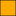

<!doctype html>
<html lang="en">
    <head>
        <meta charset="utf-8">
        <meta http-equiv="X-UA-Compatible" content="IE=edge">
        <meta name="viewport" content="initial-scale=1,user-scalable=no,maximum-scale=1,width=device-width">
        <meta name="mobile-web-app-capable" content="yes">
        <meta name="apple-mobile-web-app-capable" content="yes">
        <link rel="stylesheet" href="css/leaflet.css"><link rel="stylesheet" href="css/L.Control.Locate.min.css">
        <link rel="stylesheet" href="css/qgis2web.css"><link rel="stylesheet" href="css/fontawesome-all.min.css">
        <link rel="stylesheet" href="css/MarkerCluster.css">
        <link rel="stylesheet" href="css/MarkerCluster.Default.css">
        <link rel="stylesheet" href="css/leaflet-control-geocoder.Geocoder.css">
        <link rel="stylesheet" href="css/leaflet-measure.css">
        <style>
        html, body, #map {
            width: 100%;
            height: 100%;
            padding: 0;
            margin: 0;
        }
        </style>
        <title>Société de décontamination</title>
    </head>
    <body>
        <div id="map">
        </div>
        <script src="js/qgis2web_expressions.js"></script>
        <script src="js/leaflet.js"></script><script src="js/L.Control.Locate.min.js"></script>
        <script src="js/leaflet.rotatedMarker.js"></script>
        <script src="js/leaflet.pattern.js"></script>
        <script src="js/leaflet-hash.js"></script>
        <script src="js/Autolinker.min.js"></script>
        <script src="js/rbush.min.js"></script>
        <script src="js/labelgun.min.js"></script>
        <script src="js/labels.js"></script>
        <script src="js/leaflet-control-geocoder.Geocoder.js"></script>
        <script src="js/leaflet-measure.js"></script>
        <script src="js/leaflet.markercluster.js"></script>
        <script src="data/Dcontamination_2.js"></script>
        <script src="data/EQUIPES_3.js"></script>
        <script>
        var highlightLayer;
        function highlightFeature(e) {
            highlightLayer = e.target;

            if (e.target.feature.geometry.type === 'LineString') {
              highlightLayer.setStyle({
                color: '#ffff00',
              });
            } else {
              highlightLayer.setStyle({
                fillColor: '#ffff00',
                fillOpacity: 1
              });
            }
            highlightLayer.openPopup();
        }
        var map = L.map('map', {
            zoomControl:true, maxZoom:28, minZoom:1
        })
        var hash = new L.Hash(map);
        map.attributionControl.setPrefix('<a href="https://www.cartogis.fr/" target="_blank">CARTOGIS</a> &middot; <a href="https://leafletjs.com" title="A JS library for interactive maps">Leaflet</a> &middot; <a href="https://qgis.org"></a>');
        var autolinker = new Autolinker({truncate: {length: 30, location: 'smart'}});
        L.control.locate({locateOptions: {maxZoom: 19}}).addTo(map);
        var measureControl = new L.Control.Measure({
            position: 'topleft',
            primaryLengthUnit: 'meters',
            secondaryLengthUnit: 'kilometers',
            primaryAreaUnit: 'sqmeters',
            secondaryAreaUnit: 'hectares'
        });
        measureControl.addTo(map);
        document.getElementsByClassName('leaflet-control-measure-toggle')[0]
        .innerHTML = '';
        document.getElementsByClassName('leaflet-control-measure-toggle')[0]
        .className += ' fas fa-ruler';
        var bounds_group = new L.featureGroup([]);
        function setBounds() {
            if (bounds_group.getLayers().length) {
                map.fitBounds(bounds_group.getBounds());
            }
        }
        map.createPane('pane_GoogleHybrid_0');
        map.getPane('pane_GoogleHybrid_0').style.zIndex = 400;
        var layer_GoogleHybrid_0 = L.tileLayer('https://mt1.google.com/vt/lyrs=y&x={x}&y={y}&z={z}', {
            pane: 'pane_GoogleHybrid_0',
            opacity: 1.0,
            attribution: '<a href="https://www.google.at/permissions/geoguidelines/attr-guide.html">Map data ©2015 Google</a>',
            minZoom: 1,
            maxZoom: 28,
            minNativeZoom: 0,
            maxNativeZoom: 20
        });
        layer_GoogleHybrid_0;
        map.addLayer(layer_GoogleHybrid_0);
        map.createPane('pane_OpenStreetMapmonochrome_1');
        map.getPane('pane_OpenStreetMapmonochrome_1').style.zIndex = 401;
        var layer_OpenStreetMapmonochrome_1 = L.tileLayer('http://a.tiles.wmflabs.org/bw-mapnik/{z}/{x}/{y}.png', {
            pane: 'pane_OpenStreetMapmonochrome_1',
            opacity: 1.0,
            attribution: '',
            minZoom: 1,
            maxZoom: 28,
            minNativeZoom: 0,
            maxNativeZoom: 18
        });
        layer_OpenStreetMapmonochrome_1;
        map.addLayer(layer_OpenStreetMapmonochrome_1);
        function pop_Dcontamination_2(feature, layer) {
            layer.on({
                mouseout: function(e) {
                    for (i in e.target._eventParents) {
                        e.target._eventParents[i].resetStyle(e.target);
                    }
                    if (typeof layer.closePopup == 'function') {
                        layer.closePopup();
                    } else {
                        layer.eachLayer(function(feature){
                            feature.closePopup()
                        });
                    }
                },
                mouseover: highlightFeature,
            });
            var popupContent = '<table>\
                    <tr>\
                        <td colspan="2">' + (feature.properties['id'] !== null ? autolinker.link(feature.properties['id'].toLocaleString()) : '') + '</td>\
                    </tr>\
                    <tr>\
                        <td colspan="2"><strong>SECTEURS</strong><br />' + (feature.properties['SECTEURS'] !== null ? autolinker.link(feature.properties['SECTEURS'].toLocaleString()) : '') + '</td>\
                    </tr>\
                    <tr>\
                        <td colspan="2"><strong>SURF./M²</strong><br />' + (feature.properties['SURF./M²'] !== null ? autolinker.link(feature.properties['SURF./M²'].toLocaleString()) : '') + '</td>\
                    </tr>\
                    <tr>\
                        <td colspan="2"><strong>Décontami</strong><br />' + (feature.properties['Décontami'] !== null ? autolinker.link(feature.properties['Décontami'].toLocaleString()) : '') + '</td>\
                    </tr>\
                    <tr>\
                        <td colspan="2"><strong>Equipe</strong><br />' + (feature.properties['Equipe'] !== null ? autolinker.link(feature.properties['Equipe'].toLocaleString()) : '') + '</td>\
                    </tr>\
                    <tr>\
                        <td colspan="2"><strong>Effectué/</strong><br />' + (feature.properties['Effectué/'] !== null ? autolinker.link(feature.properties['Effectué/'].toLocaleString()) : '') + '</td>\
                    </tr>\
                </table>';
            layer.bindPopup(popupContent, {maxHeight: 400});
        }

        function style_Dcontamination_2_0(feature) {
            switch(String(feature.properties['Décontami'])) {
                case 'EN_COURS':
                    return {
                pane: 'pane_Dcontamination_2',
                opacity: 1,
                color: 'rgba(35,35,35,1.0)',
                dashArray: '',
                lineCap: 'butt',
                lineJoin: 'miter',
                weight: 1.0, 
                fill: true,
                fillOpacity: 1,
                fillColor: 'rgba(255,170,0,1.0)',
                interactive: true,
            }
                    break;
                case 'NON':
                    return {
                pane: 'pane_Dcontamination_2',
                opacity: 1,
                color: 'rgba(35,35,35,1.0)',
                dashArray: '',
                lineCap: 'butt',
                lineJoin: 'miter',
                weight: 1.0, 
                fill: true,
                fillOpacity: 1,
                fillColor: 'rgba(255,0,0,1.0)',
                interactive: true,
            }
                    break;
                case 'OUI':
                    return {
                pane: 'pane_Dcontamination_2',
                opacity: 1,
                color: 'rgba(35,35,35,1.0)',
                dashArray: '',
                lineCap: 'butt',
                lineJoin: 'miter',
                weight: 1.0, 
                fill: true,
                fillOpacity: 1,
                fillColor: 'rgba(0,255,0,1.0)',
                interactive: true,
            }
                    break;
            }
        }
        map.createPane('pane_Dcontamination_2');
        map.getPane('pane_Dcontamination_2').style.zIndex = 402;
        map.getPane('pane_Dcontamination_2').style['mix-blend-mode'] = 'multiply';
        var layer_Dcontamination_2 = new L.geoJson(json_Dcontamination_2, {
            attribution: '',
            interactive: true,
            dataVar: 'json_Dcontamination_2',
            layerName: 'layer_Dcontamination_2',
            pane: 'pane_Dcontamination_2',
            onEachFeature: pop_Dcontamination_2,
            style: style_Dcontamination_2_0,
        });
        bounds_group.addLayer(layer_Dcontamination_2);
        map.addLayer(layer_Dcontamination_2);
        function pop_EQUIPES_3(feature, layer) {
            layer.on({
                mouseout: function(e) {
                    for (i in e.target._eventParents) {
                        e.target._eventParents[i].resetStyle(e.target);
                    }
                    if (typeof layer.closePopup == 'function') {
                        layer.closePopup();
                    } else {
                        layer.eachLayer(function(feature){
                            feature.closePopup()
                        });
                    }
                },
                mouseover: highlightFeature,
            });
            var popupContent = '<table>\
                    <tr>\
                        <td colspan="2">' + (feature.properties['id'] !== null ? autolinker.link(feature.properties['id'].toLocaleString()) : '') + '</td>\
                    </tr>\
                    <tr>\
                        <td colspan="2">' + (feature.properties['Equipe'] !== null ? autolinker.link(feature.properties['Equipe'].toLocaleString()) : '') + '</td>\
                    </tr>\
                </table>';
            layer.bindPopup(popupContent, {maxHeight: 400});
        }

        function style_EQUIPES_3_0() {
            return {
                pane: 'pane_EQUIPES_3',
        rotationAngle: -0.00872665,
        rotationOrigin: 'center center',
        icon: L.icon({
            iconUrl: 'markers/blue-marker.svg',
            iconSize: [40.279999999999994, 40.279999999999994]
        }),
                interactive: false,
            }
        }
        map.createPane('pane_EQUIPES_3');
        map.getPane('pane_EQUIPES_3').style.zIndex = 403;
        map.getPane('pane_EQUIPES_3').style['mix-blend-mode'] = 'normal';
        var layer_EQUIPES_3 = new L.geoJson(json_EQUIPES_3, {
            attribution: '',
            interactive: false,
            dataVar: 'json_EQUIPES_3',
            layerName: 'layer_EQUIPES_3',
            pane: 'pane_EQUIPES_3',
            onEachFeature: pop_EQUIPES_3,
            pointToLayer: function (feature, latlng) {
                var context = {
                    feature: feature,
                    variables: {}
                };
                return L.marker(latlng, style_EQUIPES_3_0(feature));
            },
        });
        var cluster_EQUIPES_3 = new L.MarkerClusterGroup({showCoverageOnHover: false,
            spiderfyDistanceMultiplier: 2});
        cluster_EQUIPES_3.addLayer(layer_EQUIPES_3);

        bounds_group.addLayer(layer_EQUIPES_3);
        cluster_EQUIPES_3.addTo(map);
            var title = new L.Control();
            title.onAdd = function (map) {
                this._div = L.DomUtil.create('div', 'info');
                this.update();
                return this._div;
            };
            title.update = function () {
                this._div.innerHTML = '<h2>Société de décontamination</h2>';
            };
            title.addTo(map);
        var osmGeocoder = new L.Control.Geocoder({
            collapsed: true,
            position: 'topleft',
            text: 'Search',
            title: 'Testing'
        }).addTo(map);
        document.getElementsByClassName('leaflet-control-geocoder-icon')[0]
        .className += ' fa fa-search';
        document.getElementsByClassName('leaflet-control-geocoder-icon')[0]
        .title += 'Search for a place';
        var baseMaps = {};
        L.control.layers(baseMaps,{' EQUIPES': cluster_EQUIPES_3,'Décontamination<br /><table><tr><td style="text-align: center;"></td><td>EN_COURS</td></tr><tr><td style="text-align: center;"></td><td>NON</td></tr><tr><td style="text-align: center;"></td><td>OUI</td></tr></table>': layer_Dcontamination_2,"OpenStreetMap monochrome": layer_OpenStreetMapmonochrome_1,"Google Hybrid": layer_GoogleHybrid_0,},{collapsed:false}).addTo(map);
        setBounds();
        var i = 0;
        layer_EQUIPES_3.eachLayer(function(layer) {
            var context = {
                feature: layer.feature,
                variables: {}
            };
            layer.bindTooltip((layer.feature.properties['id'] !== null?String('<div style="color: #000000; font-size: 10pt; font-family: \'MS Shell Dlg 2\', sans-serif;">' + layer.feature.properties['id']) + '</div>':''), {permanent: true, offset: [-0, -16], className: 'css_EQUIPES_3'});
            labels.push(layer);
            totalMarkers += 1;
              layer.added = true;
              addLabel(layer, i);
              i++;
        });
        resetLabels([layer_EQUIPES_3]);
        map.on("zoomend", function(){
            resetLabels([layer_EQUIPES_3]);
        });
        map.on("layeradd", function(){
            resetLabels([layer_EQUIPES_3]);
        });
        map.on("layerremove", function(){
            resetLabels([layer_EQUIPES_3]);
        });
        </script>
    </body>
</html>
